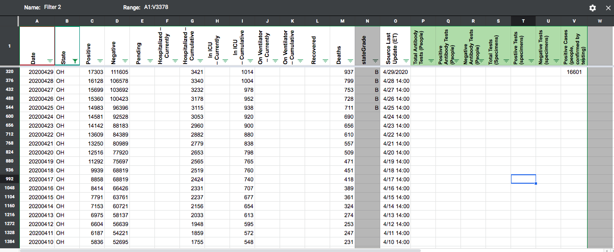
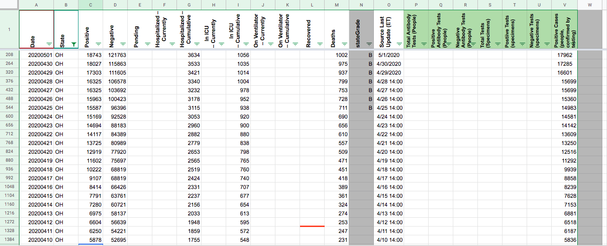

Ohio Positives from 4/28 to 4/29
Prior to, and including 4/28, the Positives for Ohio were taking the “Confirmed Cases” on Ohio’s Dashboard. See tweet from Gov Dewine here: https://twitter.com/GovMikeDeWine/status/1255204105015955457
However, on 4/29, the Positives were taken from the ‘Total Cases’ and not ‘Confirmed Cases’ (see attached picture). This made it look like a tremendous jump in cases for Ohio from 4/28 to 4/29. To fix this, it either makes sense to change 4/29 Positives to ‘Confirmed Cases’ or to change every other date before 4/29 to ‘Total Cases’ for the sake of day-to-day consistency.

Comments
Need to add 4/30 to the list. 4/30 is showing “total cases” instead of “confirmed cases.” I think it should be “confirmed cases,” which is 17,205 for two reasons:
- To match all of the reporting before 4/29
- The “Total Cases” were not all tested, some were assumed positive without testing. Since this data set includes total tests, it makes sense that positives would be people that actually received the test.
No idea how to get this updated…
👀
The Positives for OH have been updated to reflect the ‘confirmed and probable cases’ from 4/10 to 4/28. Prior to 4/10, the state was only reporting confirmed cases, so the Positives for these earlier dates have not been changed. We’ve also kept a record of the Confirmed numbers from 4/28 and earlier.  
Just to add on @Abrahajc, as more states start to report totals and confirmed separately, we’re working internally to report both of these numbers separately, where possible.
This issue has been automatically marked as stale because it has not had recent activity. It will be closed if no further activity occurs. Thank you for your contributions!
Yes, i also noticed this issue. WIll this be updated?